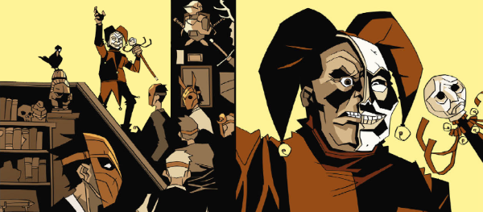

A Smash! character from 1969, and an occult investigator.
Art by Andreas Butzbach
| Story Title | Parts | Pages | w indicates a wraparound coverCovers | Year(s) | Issues | Writer | Artist | Colourist | Letterer |
|---|---|---|---|---|---|---|---|---|---|
| The Man Who Died Every Day | 1 | 8 | 0 | 1992 | 2KAS | John Tomlinson | Jim Baikie | [b&w] | Gordon Robson |
Co‑supertitled: "The Astounding Jason Hyde".King for a Day | 1 | + 1 credit pages7 | 0 | 2020 | Smash 2020 | Maura McHugh | Andreas Butzbach | <-- | [A. Cult] |
| year | episodes | pages |
| 1990 | 0 | 0 |
| 1991 | 0 | 0 |
| 1992 | 1 | 8 |
| 1993 | 0 | 0 |
| 1994 | 0 | 0 |
| 1995 | 0 | 0 |
| 1996 | 0 | 0 |
| 1997 | 0 | 0 |
| 1998 | 0 | 0 |
| 1999 | 0 | 0 |
| 2000 | 0 | 0 |
| 2001 | 0 | 0 |
| 2002 | 0 | 0 |
| 2003 | 0 | 0 |
| 2004 | 0 | 0 |
| 2005 | 0 | 0 |
| 2006 | 0 | 0 |
| 2007 | 0 | 0 |
| 2008 | 0 | 0 |
| 2009 | 0 | 0 |
| 2010 | 0 | 0 |
| 2011 | 0 | 0 |
| 2012 | 0 | 0 |
| 2013 | 0 | 0 |
| 2014 | 0 | 0 |
| 2015 | 0 | 0 |
| 2016 | 0 | 0 |
| 2017 | 0 | 0 |
| 2018 | 0 | 0 |
| 2019 | 0 | 0 |
| 2020 | 1 | 7 |
| 2021 | 0 | 0 |